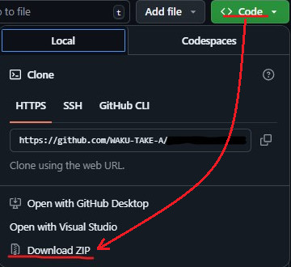
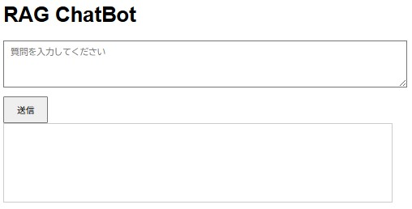

ChatBotは人間のように自然な会話を行うことを目的とした自動応答プログラムです。
大規模言語モデル型（LLM型） ChatBotとして有名なのは、ChatGpt・Claude・Gemini・Grokなどです。
FAQ形式やシナリオ形式であらかじめ決まった質問にだけ答える（Aと言われたらBと返す）ようなChatBotとは異なり、ユーザーの質問に対して非常に柔軟に回答してくれます。
ただし、必ずしも正しい情報とは限らないという弱点があります。これは、ハルシネーション（もっともらしい嘘）と呼ばれています。
RAG ChatBotについて
RAG ChatBotとは、RAG（Retrieval-Augmented Generation）という技術を用いて構築されたチャットボットのことです。「大規模言語モデル」に「外部情報検索機能」を組み合わせて、より正確な回答を可能にします。
RAGを簡単に以下の質問~回答までの流れで説明します。
- ユーザーの質問
- 検索（Retrieval-Augmented）
- ユーザーの質問に関連する文章を、様々な文書（例：社内マニュアル、FAQなど）※1から検索
- 生成（Generation）
- ユーザーの質問と検索した文章を大規模言語モデルに渡して自然な回答を生成
※1：これを外部情報と呼びます。
文書に基づいて回答を生成するので、より質問に対して正確な回答が生成される可能性が高くなります（ハルシネーション対策）。
実現方法
生成AIと議論しまた。以下のようなライブラリがあることが分かってきました。
- ユーザーの質問
- Flask／FastAPI
- 検索（Retrieval-Augmented）
- 文章のベクトル化：SentenceTransformer
- ベクトル検索：FAISS／Weaviate／Chroma
- 生成（Generation）
- OpenAIなどの生成AI
- ローカルのLLMはまだ敷居が高そう
議論の結果、FastAPI／SentenceTransformer／FAISS／OpenAIを選択することにします。
議論の方向によってはLangChainという大規模言語モデル（LLM）を活用したアプリケーション開発を支援するためのフレームワークを勧められることがあります。習得するのが大変そうなので今回は選択しませんでした。
アルゴリズム
まず、OpenAIのAPIキーを取得してくだあい。
方向性が見えてくれば生成AIに、FastAPI／SentenceTransformer／FAISS／OpenAIを使ってRAG ChatBotを作ってください。と頼めばスクリプトを作ってくれます。
実際に検証して、トライ＆エラーしながら作成していきます。
生成AIに頼む際には、Python3.11を利用します。、ドキュメントはText、Markdown、AsciiDocを読み込んでください。、ブラウザ上で質問と回答表示を行いたい。などの仕様を入力すればするほど精度の高いスクリプトを作ってくれます。
私のスクリプトのアルゴリズムは以下のようになりました。

実装したスクリプト
FastAPI／SentenceTransformer／FAISS／OpenAIを使ったRAG ChatBotサーバーの全コードを、こちらに置いておきます。参考にしてください。
ブラウザUI（テキスト入力欄、送信ボタン、回答表示）とデバッグ用のログ機能を備え、Markdownおよびテキストファイル（.md, .txt）を入力として処理する仕様です。
拡張性を考慮しつつ、30分〜1時間で動作確認まで可能な手軽な実装です。
ディレクトリ構造
project/
├── documents/ # 入力ドキュメント（AsciiDoc、Markdown、Text）
│ ├── test1.md
│ ├── test2.adoc
│ ├── test3.txt
├── templates/ # HTMLテンプレート
│ ├── index.html # ブラウザUI
├── app.py # FastAPIサーバーコード
├── requirements.txt # 依存ライブラリ
├── .env # 環境変数（OpenAI APIキー）動作確認までの流れ
こちらからZIPをダウンロードします。

展開します。
requirements.txtを使って、以下を実行します。依存ライブラリがインストールされます。
>[python.exeのあるフォルダ]/python.exe -m pip install -r requirements.txt正常にインストールされたら以下を実行します。
>[python.exeのあるフォルダ]/python.exe app.py以下のように表示されたら、ブラウザを起動し、http://127.0.0.1:8000を開いてください。
INFO:__main__:読み込み中: ***
INFO:__main__:読み込み中: ***
INFO:__main__:読み込み中: ***
INFO:sentence_transformers.SentenceTransformer:Use pytorch device_name: cpu
INFO:sentence_transformers.SentenceTransformer:Load pretrained SentenceTransformer: paraphrase-multilingual-mpnet-base-v2
Batches: 100%|█████████████████████████████████████████████████████████████| 15/15 [05:57<00:00, 23.82s/it]
INFO:__main__:FAISSインデックス構築完了
INFO: Started server process [5980]
INFO: Waiting for application startup.
INFO: Application startup complete.
INFO: Uvicorn running on http://0.0.0.0:8000 (Press CTRL+C to quit)
質問を入力し、[送信]ボタンを押すと回答が表示されます。
スクリプトのポイント
SentenceTransformerのモデルは軽量の「all-MiniLM-L6-v2」を勧められるかもしれませんが、まずは日本語対応の「paraphrase-multilingual-mpnet-base-v2（文章の意味を広く捉えるが、検索タスク向けの特別な最適化は少ない）」や「multilingual-e5-base（検索や質問応答のようなタスクで高い精度を発揮）」を使いましょう。
FAISSのインデックス構築においては、「IndexFlatL2」（特徴：すべてのベクトルとの距離を計算して最も近いものを探す）を勧められるかもしれませんが、「ほどよく曖昧で高速、かつ扱いやすい」検索をしたい場合は 「IndexHNSWFlat」（特徴：高速な近似検索）を使うのが最適だと思います。
ちなみに他にも「IndexHNSWFlat」、「IndexIVFFlat」、「IndexPQ」などがあります。
OpenAIのモデルは「gpt-4o-mini」を使っています。試行する際に、やはり安くないと怖いです。
他にもパラメータがいろいろありますが、生成AIに質問しながら設定していくのが良いでしょう。